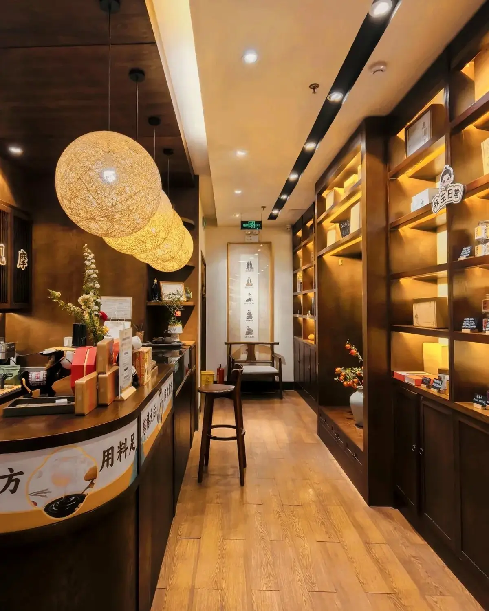

A dialogue with the doctor is really an opportunity to talk to your body.
C. · FranceWhole-person care · France
Whole-person care, explained
A full diagnosis that connected her symptoms rather than treating each alone.
Read the story →Preventive Health Screening
Step into one of Shanghai’s most advanced screening centres, complete a comprehensive check in a couple of hours, and receive a clear report and personal explanation in English. A calm, preventive way to understand your body and where to focus next.
How a screening day works
Some tests need an empty stomach, so we book the morning — please allow about 8 hours without food (water is fine).
Every test happens under one roof at a high-efficiency centre or hospital — no running between departments.
A comprehensive screening is typically complete in 2–3 hours. Specialist add-ons may take a little longer.
Your full report and a one-to-one interpretation follow roughly a week later — and can be done remotely once you’re home.
Three ways to experience it
Classic and Signature follow exactly the same screening programme — the difference is the environment, the level of privacy and the service. DX is our most extensive premium line, in a class of its own.
A well-established city centre — comfortable, spacious and efficient, with a smooth, streamlined flow. The core programme is typically complete in about two hours.
Core programme from US$640 · indicative
A calm green retreat in the city — enhanced privacy and discretion, more personalised attention, and selected access to more advanced technologies. The molecular cancer early-risk module is exclusive to Signature.
Core programme from US$1,040 · indicative
Our most extensive programme, set in Lilac Villa — a 1925 French heritage mansion with the city's largest private garden. Advanced MRI/CT neuroimaging, capsule gastroscopy and a dedicated 3-to-1 concierge team, delivered as complete DX·A and DX·B programmes.
DX·A from US$1,054 · DX·B from US$2,969 · indicative
Prices shown are indicative starting points for the core programme, and every cost is confirmed with you before anything is arranged. See the full programme & pricing brochure (PDF).
What a comprehensive screening covers
Every Classic and Signature programme is built the same way: one Comprehensive Core Programme that looks across the whole body, plus Optional Specialist Modules you can add for deeper insight where it matters to you.
A whole-body baseline in a single visit — physical and biometrics; full blood, biochemistry, liver, kidney, lipid, cardiac, metabolic and endocrine panels; a 12-marker tumour and viral-risk panel; a full ultrasound suite; low-dose CT; bone density; and eye, ENT, dental and women's / men's health checks. Identical across Classic and Signature — the series differ only in setting and service.
Added on top of the core programme, for deeper preventive insight:
Deeper cardiovascular and cerebrovascular assessment — arterial stiffness, coronary calcium scoring, transcranial Doppler and brain MRI.
Non-invasive digestive insight, including magnetically-controlled capsule gastroscopy — no anaesthesia required.
Targeted genetic screening for inherited cancer susceptibility, for long-term preventive planning.
Molecular-level early cancer-risk signals via ctDNA or whole-exome sequencing — our most comprehensive preventive insight.
Exact items can vary by institution, and all modules are for preventive risk assessment and clinical reference. For the full item-by-item list and module pricing, see the Classic & Signature programme brochure (PDF).
Premium Series · DX
DX is our most extensive screening line, defined above all by its environment and service. It unfolds in Lilac Villa — a 1925 French heritage mansion with the city's largest private garden — where the experience matters as much as the medicine.
Choose the DX·A programme or the more comprehensive DX·B, and optionally add the Genomic Cancer Risk Panel or the Cancer Early-Risk module.
Why screen here
China’s screening centres adopt new technology quickly — magnetically-controlled capsule endoscopy is one example — and they see very high volumes, which builds real depth of experience. For preventive screening, that often means greater scope, speed and value than comparable programmes in many other markets. HYA Wellness curates access to the best of it, and makes the whole thing effortless for an international guest.
A note on what screening is
A health screening is designed to give you information and a general picture of your health, for your own understanding and to help you decide where to focus. It is not a medical diagnosis. HYA Wellness curates and coordinates the experience; all tests are carried out by licensed partner centres and hospitals and their medical teams. If a result raises any question, we’ll help you arrange a separate medical consultation to look into it properly.
Good to know
Yes. Some tests require an empty stomach, so screenings are usually booked in the morning and we ask that you allow about eight hours without food beforehand. Water is fine, and we send clear preparation guidance before your visit.
Most comprehensive screenings are complete in about two to three hours, with everything done at a single, high-efficiency location. Specialist add-ons may take a little longer.
A full report and a one-to-one interpretation follow about a week after your visit, and can be arranged remotely once you’ve travelled home.
No. A screening gives you information and a general picture for your own understanding and direction — it isn’t a diagnosis. If anything raises a question, we’ll help you arrange a separate medical consultation to look into it.
At licensed partner screening centres and hospitals in Shanghai. The experience is fully supported in English, and your report and interpretation are provided in English.
Sometimes. Depending on the centre and your specific coverage, insurance settlement may be possible. Share your insurance details when you enquire and we’ll confirm what’s supported beforehand.
Tell us when you’ll be in Shanghai and what you’d like to cover — we’ll arrange the right programme and reply on WhatsApp.
Plan your visit on WhatsAppGuest stories
A dialogue with the doctor is really an opportunity to talk to your body.
C. · FranceWhole-person care · France
A full diagnosis that connected her symptoms rather than treating each alone.
Read the story →
Industry visit · Europe
A curated route across our partner network — including a modern screening facility.
Read the story →Short films from real visits — treatments, consultations and the places we take our guests.